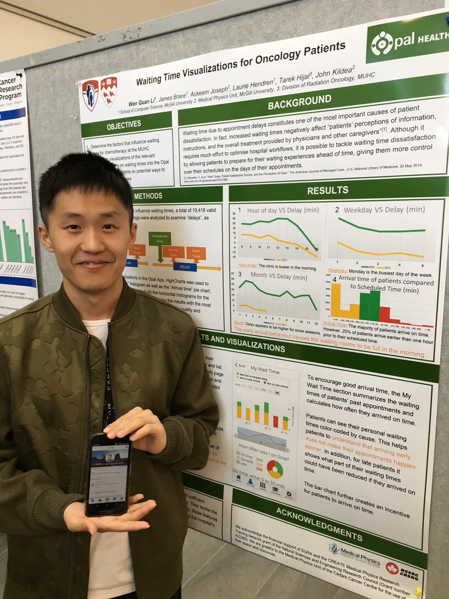

Working on revenue optimizations and monetization strategy. I build features and systems which help retaining and expanding paid user base.
Integrated convenient features such as cross-device copy/paste/screenshot and computer vision backed Accessibility features such as screen narration with less than 1s latency using Azure Cloud Service/Narrator/Jaws, all features conformant to WCAG standards, into the MS Your Phone App.
Product Release at Samsung UnpackWorked on features like current waiting time for patients in my treatment hospital. Released in 2018. Currently works on patient matching product.
Product Landing PageWorked on the delivery of the inter-institutional decentralized claims record system to help Canadians fighting insurance fraud.
My story with coding started very late. In fact, I have never been interested in CS (music and math all the way!) until an unfortunate illness hit me just before university. My 6 months of experience at hospital allowed me to discover people's pain points resulting from the lack of transparency and automation. I realized the potential of CS at bringing value to our society and decided to pursue a career in this field. Now, my goal is to be able to build products that will truly benefit the people in a lovable way, so much that they will tell their friends "Try this, I really like it!".
I am currently a product engineer at Asana who recently graduated from McGill University, majoring in Stats & CS with a minor in Finance. Still learning the different aspects of creating a great product, let it be technical, design, business or legal. In my free time, I love composition and improvisation as a jazz/pop saxophonist. Moreover, I am committed to the Childhood Cancer Society.
Product Leadership, Strategy, Software Engineering, Venture Capital, Entrepreneurship, Statistics, Health Tech, Music
